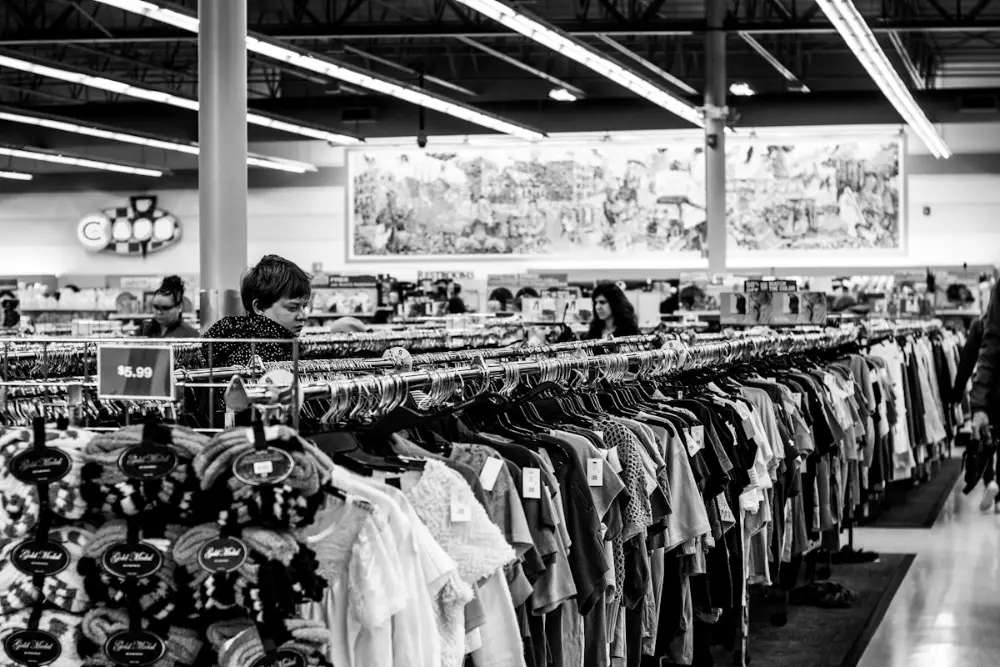
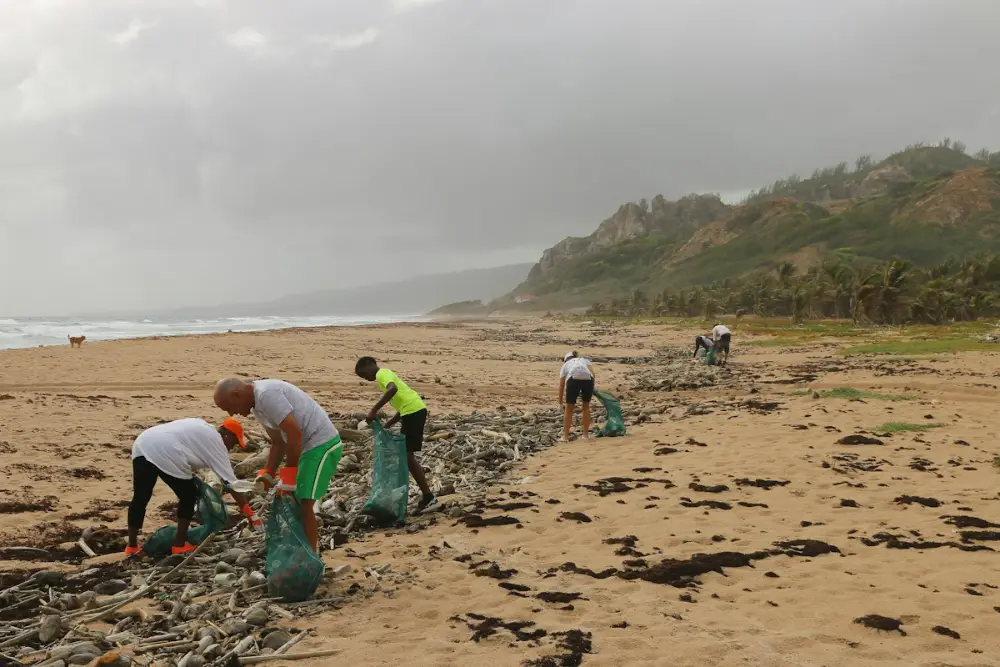

Simulacro de Speaking: ropa y viajes
Las 4 partes del examen con fotos · unos 12 minutos
Antes de empezar
El móvil hace de examinador: lee cada pregunta en voz alta y un cronómetro te marca el tiempo, como en el examen real. Contesta en voz alta.
Este navegador no puede leer en voz alta: lee tú las preguntas en la pantalla.
- Parte 1
- Parte 2
- Parte 3
- Parte 4
-
Contestas tú (Student A)
What's your name?
Ejemplo de respuesta
My name's Laura. / I'm Laura.
-
Contestas tú (Student A)
Where do you come from?
Ejemplo de respuesta
I'm from Seville, in the south of Spain. / I come from a small town near Madrid.
-
Contestas tú (Student A)
Do you work or are you a student?
Ejemplo de respuesta
I work in an office. I'm an administrative assistant. / I'm a student. I'm studying at university.
-
Contestas tú (Student A)
Do you like reading books?
Ejemplo de respuesta
Yes, I do. I usually read before going to bed. I love detective stories because they're exciting.
-
Contestas tú (Student A)
Do you like watching television?
Ejemplo de respuesta
Not really. I prefer watching series on my laptop, especially comedies, because they help me relax.
-
Contestas tú (Student A)
What music do you like to listen to?
Ejemplo de respuesta
I like pop and rock. I listen to music on the bus every morning and my favourite singer is Dua Lipa.
-
Contestas tú (Student A)
Do you like animals?
Ejemplo de respuesta
Yes, a lot. I've got a dog called Toby. I take him for a walk every evening.
-
Contestas tú (Student A)
How do you like to celebrate your birthday?
Ejemplo de respuesta
I usually have dinner with my family and then I go out with my friends. Last year we had a party at my house.
-
Contestas tú (Student A)
What did you do last weekend?
Ejemplo de respuesta
On Saturday I went shopping with my sister and on Sunday I visited my grandparents. It was very relaxing.
-
Contestas tú (Student A)
Is there a country you would like to visit in the future?
Ejemplo de respuesta
I'd love to visit Japan because the culture is very different and I really like Japanese food.
-
Contestas tú (Student A)
Do you think English will be useful for you in the future?
Ejemplo de respuesta
Yes, definitely. I'd like to work abroad, and English is important for travelling too.
-
Contestas tú (Student A)
Which do you like best, the morning or the afternoon?
Ejemplo de respuesta
I prefer the afternoon because I'm not very active in the morning. I need a coffee to wake up!
-
Contestas tú (Student A)
Tell us about your English teacher.
Ejemplo de respuesta
My teacher is called Mark. He's from London and he's very patient. His classes are fun because we play a lot of games.
-
Contestas tú (Student A)
Now, I'd like each of you to talk on your own about something. I'm going to give each of you a photograph and I'd like you to talk about it. Student A, here is your photograph. It shows people shopping for clothes. Please tell us what you can see in the photograph.
Foto: Vitaly Gariev en Unsplash Cosas que puedes decir de esta foto
- In this photo I can see two young women in a clothes shop.
- They're standing between two rails full of clothes.
- The woman on the left has long brown hair and she's wearing a denim jacket.
- The other woman is blonde. She's wearing a grey striped jumper and jeans.
- They're smiling and talking to each other, so I think they're friends.
- The woman on the left is holding a red shopping bag, so maybe she has already bought something.
- Behind them there are lots of coats and jackets on hangers.
- On the right there's a mannequin wearing a dark blue jacket.
- Perhaps they're deciding what to buy, or one of them is asking for her friend's opinion.
- The shop looks modern and bright, and they look like they're having a good time.
-
Habla tu compañero (Student B)
Student B, here is your photograph. It also shows people shopping for clothes. Please tell us what you can see in the photograph.

Foto: Sean Benesh en Unsplash Cosas que puedes decir de esta foto
- This photo is in black and white.
- It shows the inside of a very big clothes shop. I think it's a second-hand shop.
- There are long rails full of clothes: T-shirts, shirts and jumpers.
- In the middle there's a woman with short dark hair. She's looking at the clothes.
- In the background I can see some other customers, but it isn't very crowded.
- On the left there's a sign with a price: five dollars ninety-nine, so the clothes are quite cheap.
- At the front there are some woolly hats and scarves.
- There are long lights on the ceiling and a big painting on the wall.
- I think people come here to find bargains.
- I like shops like this because you can find unusual clothes and it's good for the environment.
-
Contestas tú (Student A)
Now, Student A, here is another photograph. It shows people helping the environment. Please tell us what you can see in the photograph.

Foto: Brian Yurasits en Unsplash Cosas que puedes decir de esta foto
- This photo shows a group of people cleaning a beach.
- They're picking up rubbish and putting it into green bags.
- There's a lot of plastic and pieces of wood on the sand.
- On the left there's an older man wearing green shorts and a white T-shirt.
- Next to him, a woman is wearing an orange cap and orange gloves.
- A boy in a yellow T-shirt is helping too.
- In the background I can see the sea, some hills and palm trees.
- The sky is grey and cloudy, so it might rain soon.
- There's a dog walking on the beach on the left.
- I think they're volunteers. It's important because plastic is very dangerous for sea animals.
-
Habla tu compañero (Student B)
Student B, here is your photograph. It also shows people helping the environment. Please tell us what you can see in the photograph.
Foto: Vitaly Gariev en Unsplash Cosas que puedes decir de esta foto
- In this picture there's a young man holding a big blue rubbish bag.
- He's wearing glasses and a light blue T-shirt.
- He's smiling at the camera, so he looks happy.
- He's wearing gloves to protect his hands.
- Behind him, two women with red hair are collecting rubbish.
- They're all wearing the same T-shirts, so I think they're volunteers.
- They're next to a lake or a river, and there are lots of trees in the background.
- It's probably summer because it looks sunny and warm.
- I think they're cleaning the area because people left rubbish there.
- I'd like to do something like this because it's a good way to help your town.
-
Habláis los dos
Now, in this part of the test you're going to talk about something together for about two minutes. I'm going to describe a situation to you. Your friend is going to travel to England for a week. He doesn't have much room in his suitcase. Here are some things that he could take. Talk together about the different things he could take, and say which would be most important. All right? Now, talk together.
- an umbrella
- a warm jacket
- a camera
- a phone charger
- a guidebook
- a laptop
- sunglasses
- a map
Frases para hablar en pareja
- Shall we start with...?
- What do you think about...?
- I think ... is important because...
- He definitely needs... / He doesn't need...
- That's a good idea. / I agree.
- I'm not so sure. I think...
- What about...?
- On the other hand...
- So, do we agree that ... is the most important?
Lo que podría decir tu compañero:
- Shall we start with the umbrella? It rains a lot in England, so I think it's really useful. What do you think?
- That's true. What about the camera? He'll want to take lots of photos.
- Hmm, I'm not sure about the laptop. It's heavy and he's only going for a week.
- I agree. He can use his phone for maps, so maybe he doesn't need a map.
- Sunglasses aren't very important in England, are they?
- So, what's the most important thing for you?
-
Contestas tú (Student A)
Thank you. So, which thing do you think would be most important?
Ejemplo de respuesta
I think the most important thing is the phone charger, because he needs his phone for everything: maps, photos and calling his family.
-
Contestas tú (Student A)
Have you ever travelled to another country?
Ejemplo de respuesta
Yes, I have. I went to Portugal last summer with my family. We visited Lisbon and it was amazing.
-
Contestas tú (Student A)
What type of clothes do you pack when you go on holiday?
Ejemplo de respuesta
It depends on the place. For the beach I pack shorts, T-shirts and a swimsuit, but for the mountains I take warm clothes and boots.
-
Contestas tú (Student A)
Do you like wearing sunglasses?
Ejemplo de respuesta
Yes, I wear them all the time in summer because the sun is very strong in Spain.
-
Contestas tú (Student A)
What's the weather like in your country?
Ejemplo de respuesta
In the south it's hot and sunny most of the year, but in the north it rains more and it's cooler.
-
Contestas tú (Student A)
Does anyone help you to pack your suitcase?
Ejemplo de respuesta
No, I do it myself. I usually make a list the day before so I don't forget anything.